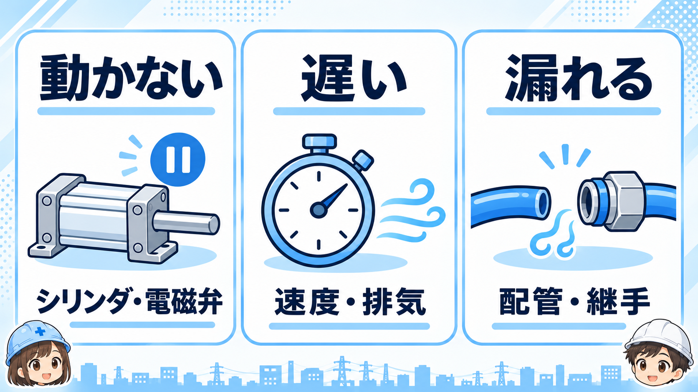

動かない
元圧と二次側の既設表示、指令の有無、全く動かなかったのか途中まで動いたのかを分けます。表示の記録だけで、弁やシリンダの故障とは決めません。
エアシリンダが動かない時に見る順番ひとこと：電気とエアを同時に疑わず、順番に切り分けます。
最終内容更新：
空圧トラブルでは、止まった・遅くなった・漏れたのどれかで、優先して見る情報が変わります。シリンダだけを疑わず、既存の表示や記録からどこまで正常に見えたかを絞ります。
電磁弁の表示灯は、弁内部の切替や空気の到達を証明しません。逆に、シリンダが動いたという記録だけでは、到着信号がPLCに入ったかは分かりません。

この記事で扱うのは、危険範囲の外から読める既存の表示、通常運転で既に得られた記録、図面の照合までです。確認のために設備を動かしたり、ガードを開けたりしません。異常な動きや漏れがある場合は、現場の停止・連絡手順を優先します。
停止していても、回路の一部に圧縮空気が残ったり、支えられていた部材が動いたりすることがあります。表示灯が消えたことや、ある圧力計がゼロを示したことだけで、設備全体を安全とは判断しません。
点検でガード内に入る、配管に触れる、部品を外す必要がある場合は、設備を扱う権限と教育を受けた担当者へ引き継ぎます。担当者が設備の手順に従って、電気・空気などのエネルギー源の隔離、再投入の防止、残圧と可動部の安全を確認します。この記事は、圧力調整、手動切替、PLCの強制出力、安全機能の解除を案内しません。
順番の目安であり、配管図でも動作確認の指示でもありません。
「表示あり」と「物理的に動いた」は別欄。分からない状態は「未確認」として残します。
症状ごとにまず見る場所を先に決めると、点検の順番がぶれにくくなります。
元圧と二次側の既設表示、指令の有無、全く動かなかったのか途中まで動いたのかを分けます。表示の記録だけで、弁やシリンダの故障とは決めません。
エアシリンダが動かない時に見る順番ひとこと：電気とエアを同時に疑わず、順番に切り分けます。
操作画面に指令が表示されているか、その時に設備の動きが記録されたかを区別します。ランプの状態だけでは弁の切替は未確認です。
ソレノイドバルブが動かない時の確認手順ひとこと：ランプ点灯だけで内部切替OKとは限りません。
伸び側だけか、戻り側もか、負荷がかかったときだけかを記録します。供給圧力の変化だけでなく、配管、排気、速度調整機器、機械負荷も判断の材料です。現場で設定を動かして試さないでください。
スピードコントローラとは？ひとこと：停止時だけでなく動作時の圧力低下を見ます。
切替のたびの排気なのか、普段と違う連続音なのかを、離れた安全な位置から分かる範囲で記録します。音が弁付近でも漏れ元は断定せず、場所を探すために近づいたり、手で探ったりしません。
エアチューブ・継手とは？ひとこと：石けん水などで漏れ箇所を見える化すると確実です。
機械の到着が記録にあるか、リードスイッチや圧力スイッチの表示、PLC入力のどこまで記録に残るかを別々に扱います。
PLC入力が入らない時の確認手順ひとこと：センサー/PLC信号の取り合いを先に確認します。
まず記録の圧力計がどこを見ているかを確認。停止時と通常運転時の既存記録が両方あるときだけ、同じ地点・似た条件で比較します。
圧力レギュレータとは？ひとこと：圧の揺れは供給側・消費側どちらでも起きます。
記録の例（説明用）：同じ時刻に「操作画面では前進指令あり」「シリンダは途中停止」「到着入力は記録上OFF」と分かったとします。この情報だけで到着センサーの故障とは言えません。まず、実際には到着前だったことと、指令表示があったことを分け、供給・弁と排気・機械側のどこが未確認かを伝えます。
動かない・遅い・漏れるでは、見る情報が異なります。供給、指令表示、弁と配管・排気、機械の動きと到着信号を順に分ければ、確認したことを保全担当者に共有できます。
観察から分からないことは未確認のまま扱い、安全を確保した点検へ引き継ぎます。機器の仕様と安全手順は、機種ごとのメーカー資料と設備の手順を優先します。
公式資料確認日：2026年11月24日